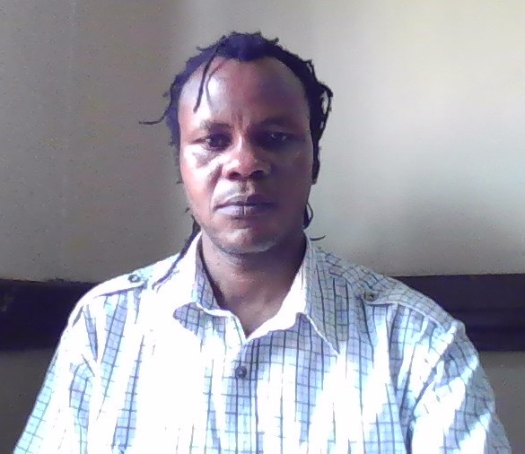

Oluwafemi Raphael Ajide | WDD 130

My name is Oluwafemi Raphael Ajide. I am a BYU-Pathway student with a strong interest in software development and technology. I enjoy learning new skills, exploring how websites and computer programs work, and solving problems through technology. Currently, I am learning HTML, CSS, and Python as I work toward my goal of becoming a software engineer. My studies are helping me develop my creativity, critical thinking, and problem-solving skills. I believe that learning programming will give me the opportunity to create useful applications and make a positive difference in people's lives. I am committed to improving my knowledge, gaining practical experience, and becoming a better programmer every day. I look forward to continuing my education and using the skills I learn to build meaningful projects and achieve my future career goals.